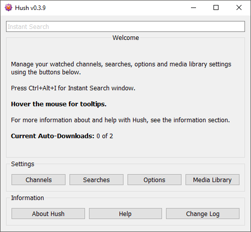
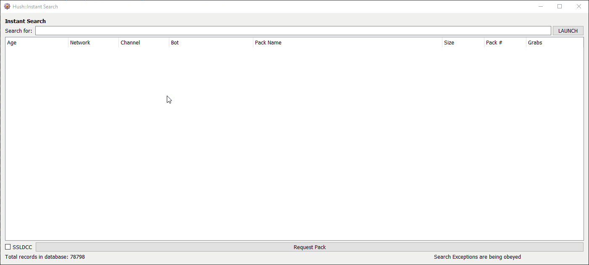

Welcome to the Hush help file. Please note if viewing in the KVIrc Help Browser you may need to opposite click and select "Reload" to see updated help files after upgrading version.
This help file was updated for v0.3.9 release. The content may be behind if the Hush version is greater than the one written here.
If upgrading from a version that is lower than v0.2.7 make sure you export your hush settings prior to installing the new version! The upgrade routine will remove your settings file and you will have to enter all your settings again. To export your settings go to Hush -> Options -> Export Settings and save to a file. Import from this file after upgrading.
To install Hush:
Hush is now installed and you should see a new button on KVIrc's toolbar area. Clicking that button will open the main Hush window. You can also press Ctrl+Alt+H to open the main Hush window while in KVIrc.
When I open [one of] the Hush window, it doesn't look like the screenshots? Resize the window. Hush works on different operating systems and screen configurations. Resize the windows so they look good to you.
Clicking the Hush button on the top toolbar in KVIrc will open the Hush main window.

The main window offers access to all of the settings in the script. Hush needs at least 1 watched channel, 1 search value and the Hush database option enabled for passive searching to begin operating, or needs 1 watched channel and the Hush database option enabled for instant search to begin operating.
Hush requires some configuration before it will begin doing anything. It requires at least:
If you want to use more features Hush offers, you need to do a little more configuration. Some of the additional features include passive searching (useful for pulling down TV episodes on a weekly basis or for grabbing content as soon as it becomes available), search exception filtering, importing of movie titles from outside sources, automatic moving of content to your media location(s) and more.
What to do now? Wait. Hush is a passive search. This means that it is watching the channels that announce packs. When something in those channels matches something you are searching for, Hush will log it in the found content window for you. The found content window is named "Hush" by default (you can change this also) and will appear in your channel list area automatically as soon as something is found.
Suggestion: To get started and see how it passive searching works, you can search for something broad, like *2019*1080*mkv* and trigger a passive search in the Searching Options using the Passive Search Now button.
From v0.3.1 onward Hush has an Instant Search system. You can bring up the Instant Search window by pressing Ctrl+Alt+I or by clicking the Instant Search button in the Hush toolbar on the main KVIrc window.
The Instant Search window will display how many pack announcements are currently searchable in the lower left corner of the window. Enter a search string in the input box and press Enter key or click the LAUNCH button to run the search. Depending on the number of results a search can take a few seconds. When the search is done all the matching results will be shown in the results list and the total number of matches found will be shown in the lower right corner of the window.
To search for content:
The result list shows information about each pack that your search matched. The list is sorted by Pack Name then Age by default. You can change the sort order by clicking the column titles.
A little more about the instant search system and its settings:
Instant search works by logging the messages from your watched channels. It stores the announce data locally on your computer so you can
search privately.
Most users are probably not interested in this, but if you have trouble with something you can turn on Hush's own debug mode by opening the Options window and pressing 4444 while the Options window is up. A Debug Messages window will appear in the channel window list where all debug messages will be sent.
Debug mode is useful if you can't find things like where your config files are, most of that info can be found in debug mode messages.
Hush is not working/there's red errors/it's not working!! ? - Ensure you've done minimal configuration (database is enabled in
Options and you've set to watch an XDCC announce Channel).
If you've done minimal configuration, you can try using Instant Search to check if theres anything in the database:
When I install Hush there is no indication it is installed? - The addon manager will display some feedback when it registers an addon and there should be a message saying Hush is installed. You might need to check your channel windows and if you use split window setup the addon feedback will be in the top split window. You should also see a new toolbar button somewhere, it has spiral on it.
When I press the Hush toolbar button, or press Ctrl+Alt+H in KVIrc I get the following error in a status window: "[KVS] Runtime error: Class 'hush::main' is not defined [KVS] In script context "kvirc::corecall(run)", line 6, near character 12" -
Most likely the hush class has not been built, maybe someone has altered something in the class (maybe you?) and it needs rebuilding. You can check this by going to menu:
Scripting -> Edit Classes and in the class editor's tree on the left side expand the hush namespace. The icons for the all the classes should be coloured red/green/blue
and not be grey. If any of them are grey, click the Build button in the bottom right corner and try opening Hush again.
If the class won't build (icons stay grey, usually a dialog appears saying it can't build) either the class code has been altered or maybe the release of the script is bad.
Uninstall and try redownloading and reinstalling the Hush script.
I lost the Hush toolbar button somehow? Opposite click anywhere on the toolbar area, go to Toolbars, Customize... click the Generic tab, find Hush action in the list, click and drag it back to the toolbar area wherever you like. Click Close on the Customize Toolbars window.
Something is not working, is there a debug mode? (Or you are a coder and you want to see what's going on) From v0.2.4 onwards Hush has a debug system being written into it.
To turn it on/off go to KVIrc's Class Editor (Ctrl+Shift+D) and in the class tree go to: hush -> main -> constructor, at the top of the constructor code somewhere is a
variable called @%debug. For debug mode, set it to $true. For no debug mode, set it to $false.
From v0.2.9 onwards you can open the Options window and press 4444 to toggle debug mode on and off. If you restart KVIrc you will need to turn debug mode back on again using this
method.
I don't want to see pr0n in my search results? Use search exceptions in Hush > Searches. Add an exception for "xxx" and it will hide anything matching that, which is 99.9% of all pr0n on offer.
I have installed and configured Hush. The Found Content Window has appeared in the KVIrc channel tree list, but I can't click to show the window? - The Found Content Window is "undocked" from the KVIrc main window. You may accidentally do this at some stage and not realize. To fix, opposite-click the Found Content Window name in the channels tree list and then click Dock.
I am not getting push notifications from Hush? From v0.3.0 onwards Hush has push notification support only if you use a ZNC server to connect to IRC and you have the ZNC Push module installed on the server and it is configured and working. See ZNC website to get started.
When I click on Channels/Searches/Options button, nothing happens? For some reason, if you alter the channels, searches, options class code in Class Editor, then rebuild the class this happens. You need to also alter (just add a new line somehwere) the main class and rebuild that too. That should fix this problem if you alter the class code for some reason.
When I request a pack, the bot sends a different file to what I want? This happens because time has passed between when Hush found the pack and when you have requested it. Bots change the pack number used to request a pack as time goes on. Usually Hush will find the new pack number when the bot announces the pack again. You should always try to request from the most recent announcement of a pack as this lowers the chance of this happening.
When I use Instant Search, I get no results? Either there is no data in the database or your search doesn't match anything in the database.
Check if: 1. Instant Seach is enabled in Options > Instant Search 2. the write buffer is not set too high (try lowering this value if you are only on 1 or 2 channels)
3. the database buffer is not set too low (try increasing this value if it is really small. 60 minutes is the recommended setting) 4. your
search has no matches. Try searching for something broader, like "mkv" and it should show you results.
There is also the possibility that the instant search database file can't be created. Turn on debug mode and press the Reset Database button in
Options > Instant Search. It should tell you if there is a problem making the database. 99% of the time under UNIX environment directory permissions
cause issues like this.
When I sort the instant search results by pack number or grabs it doesn't sort the numbers correctly? This is because the listview widget is treating the values in that column as strings instead of numbers. If you used Windows deacades ago you will remember it sorted numbers like this too. I don't really have any control over this mechanism in the software except to zerofill the numbers so they sort correctly and I decided against that for aesthetic reasons. We will just have to suffer in our jocks.
To uninstall Hush: